3D & Blender / Render log / Chicago → New York
I have been working in Blender since 2016. Every scene below is a procedural build
script — geometry, materials, lighting, and camera are authored in Python, run headless,
and rendered to frame sequences, so each one rebuilds identically from source instead of
living inside a .blend nobody else can open.
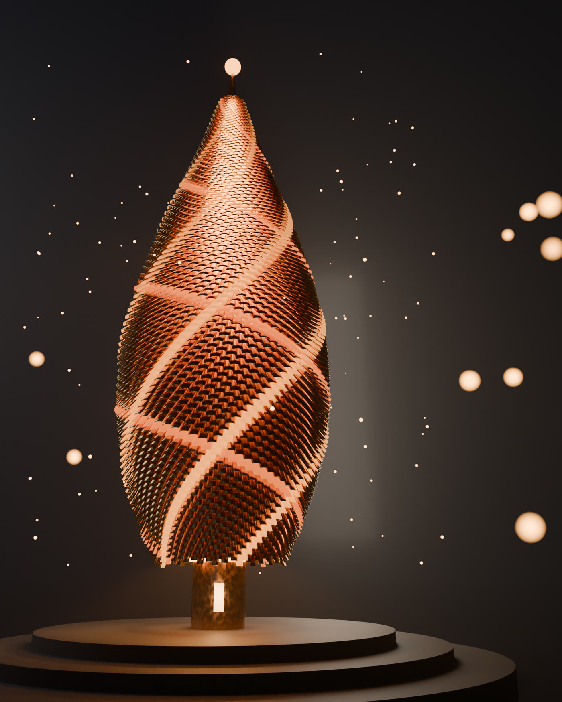
An 18-metre spire whose entire surface is individual bronze petal-scales, each one placed at the golden angle of 137.5077° along a vase profile. 6,000 phyllotaxis samples go in; 5,281 scales survive the neck cutoff and get placed, sized, and oriented.
The problem was that the spirals would not read. Highlighting a single
residue of a low Fibonacci family winds so slowly around the form that it renders as
horizontal banding — the eye sees rings, not phyllotaxis. Lighting several residues of
i%55 gives five gently counter-clockwise arms, and i%34 adds two
clockwise arms crossing them, which is what finally makes the parastichy legible on camera.
The second problem was orientation. Guessing Euler angles mirrored roughly
half the scales or buried them in the surface. Each petal's matrix is built from explicit
basis vectors instead — circumferential, droop-rotated meridian, outward normal — with
x = y × z to guarantee the basis stays right-handed.
Proof pass — 640 × 800, 40 spp
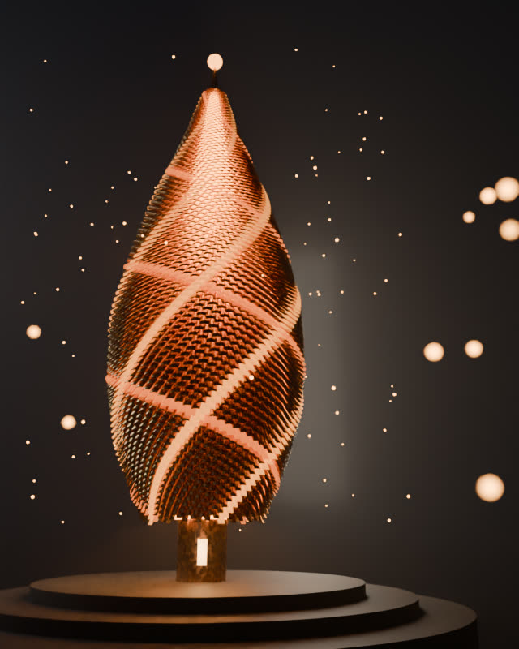
-- proof — composition check before the 144 spp pass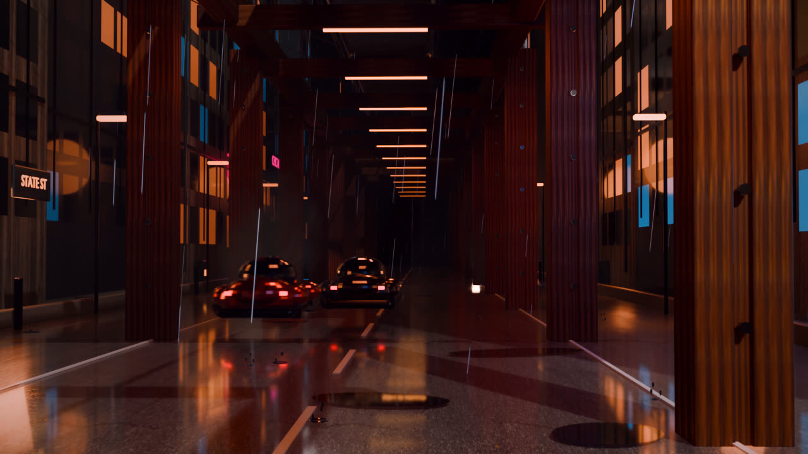
A night-city environment generated entirely from a 973-line build script — street grid, towers, signage, street furniture, and traffic are all placed parametrically from a fixed seed, so the city is reproducible rather than hand-dressed.
Look dev runs on real PBR sets — asphalt, concrete, and rust, each with diffuse, normal, and roughness maps — lit by an HDRI plus practical neon and sodium sources. Atmosphere is three separate volume layers at different depths, which is what gives the canyon its falloff; the sewer steam is its own principled volume at 0.16 density and 0.35 anisotropy.
The camera path is built to close on itself: 192 frames at 24 fps, every animated value driven off a full period of the loop so the last frame hands back to the first without a visible seam.
Frames from the loop
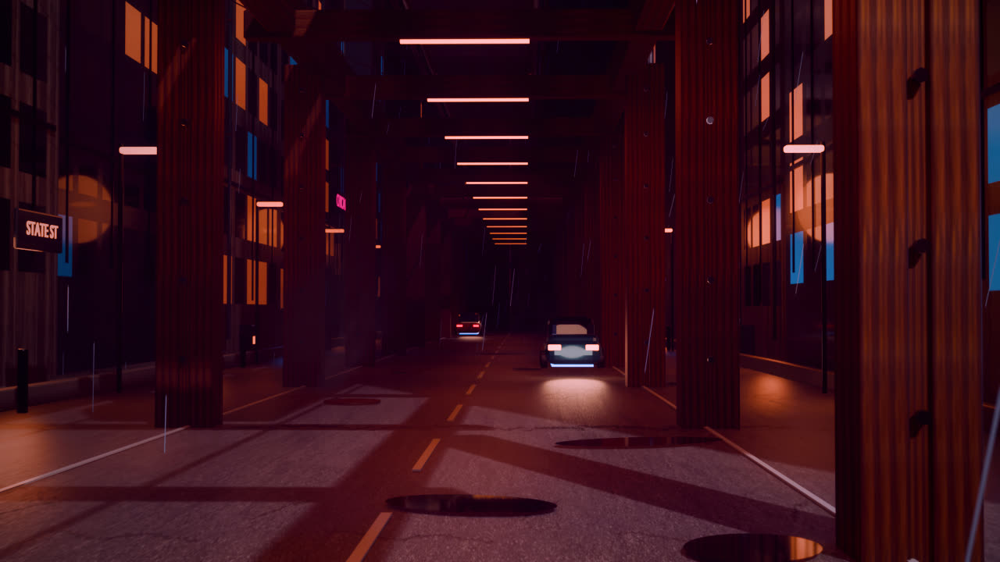
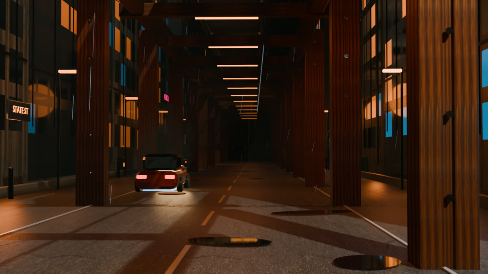
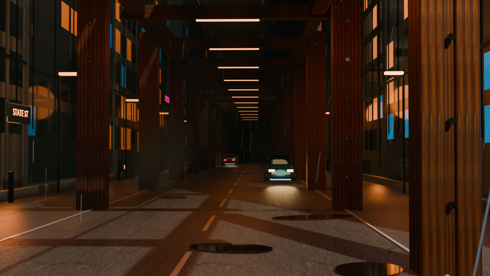
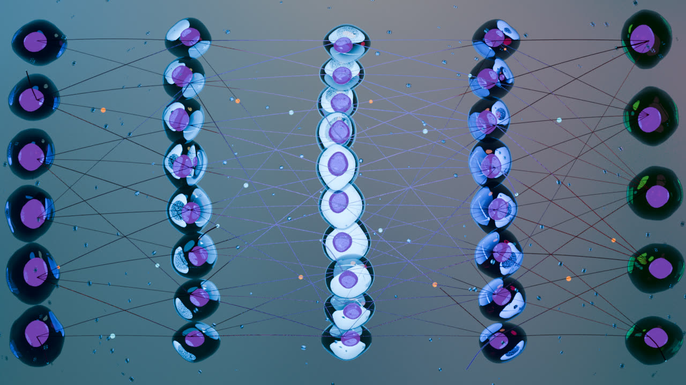
A layered field of cells rendered as glass and subsurface, dividing and pulsing across a 240-frame loop, with signal traffic running along the connections between columns.
Nothing here is keyframed. Every motion — membrane swell, nucleus drift, vesicle rotation, emission blink — is a driver expression evaluated against the frame number, phase-offset per cell. Because each expression is a full sine period over the loop length, the animation closes exactly, and re-timing the whole piece means changing one constant rather than re-cutting hundreds of keys.
The camera is orthographic and drifts on its own driver, breathing the framing
21.5 ± 0.24 so the composition never sits perfectly still.
Frames from the loop
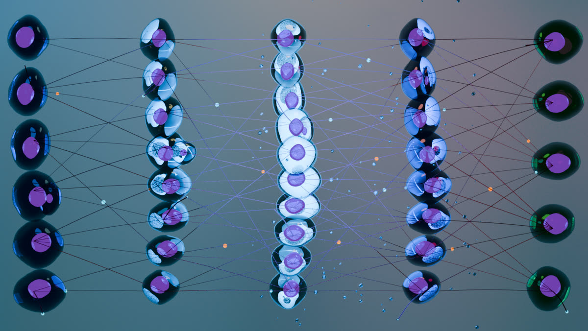
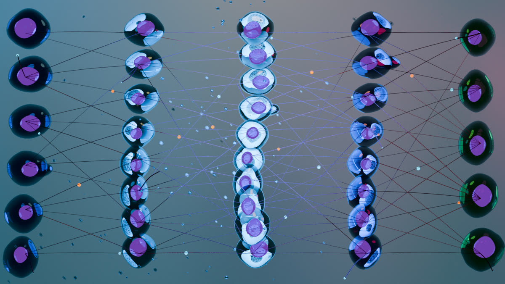
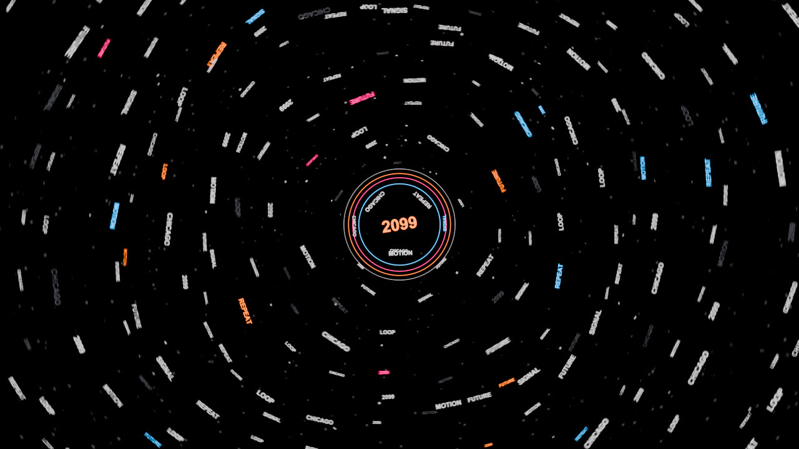
Typography treated as a modelling problem: several hundred words built as real extruded text geometry, distributed through depth, and orbited around a fixed centre ring so the field reads as one rotating volume rather than a flat particle wash.
The constraint was legibility under motion. Word density, extrusion depth, and curve resolution all trade against read time — too dense and the field turns to noise, too sparse and the depth cue disappears. The accent words carry the only saturated colour in the frame, which is what keeps a hierarchy inside an otherwise uniform swarm.
Frames from the loop
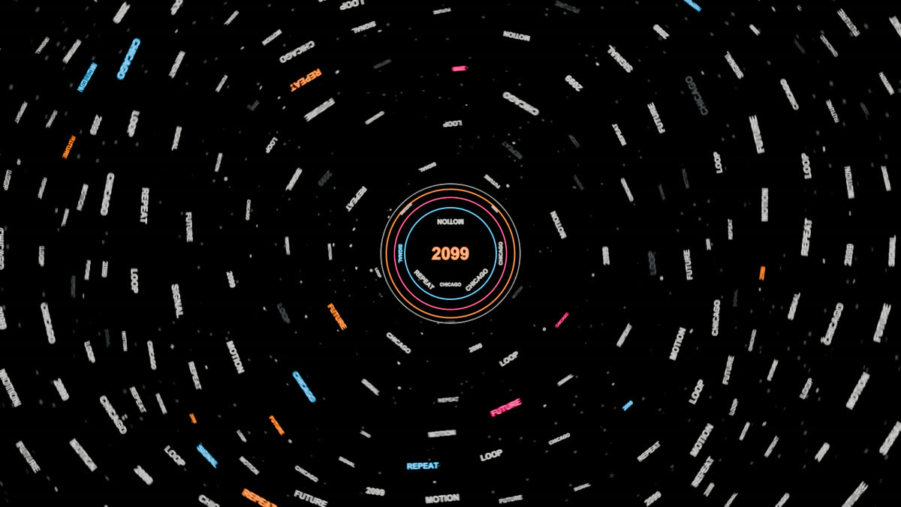
How these are made
Each piece is one Python file. Blender runs it headless from a clean factory startup, which
builds the scene from nothing, renders the frame sequence, and writes the .blend
as a by-product rather than a source of truth. The script is what lives in Git.
That means look-dev decisions are diffable, a proof pass and a final pass are the same file with a different argument, and a scene that broke three weeks ago can be rebuilt exactly. It also means the render settings on this page aren't recollections — they're read straight out of the source.
Comfortable across hard-surface and organic modelling, UV and PBR texturing, HDRI and practical lighting, volumetrics, Cycles and EEVEE, and the troubleshooting end of all of it: sampling budgets, colour management, and why a render looks wrong.
$ blender --background --factory-startup \
--python build_reliquary.py -- final
[reliquary] materials
[reliquary] petal mesh
[reliquary] placing 6000 scales
[reliquary] placed 5281 scales
[reliquary] core, neck, plinth
[reliquary] embers
[reliquary] lights
[reliquary] camera
[reliquary] render settings
[reliquary] render device: GPU
[reliquary] compositor ok
[reliquary] rendering final -> reliquary_hero.png
[reliquary] render complete